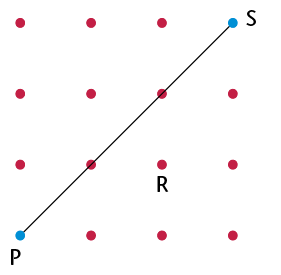
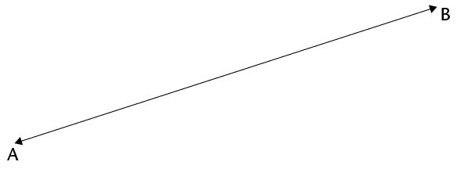
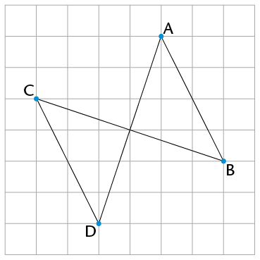
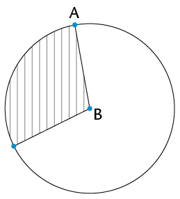
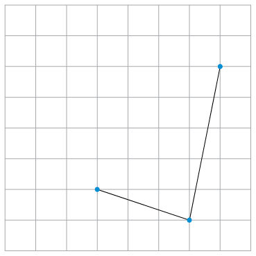
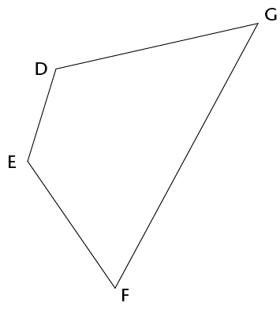
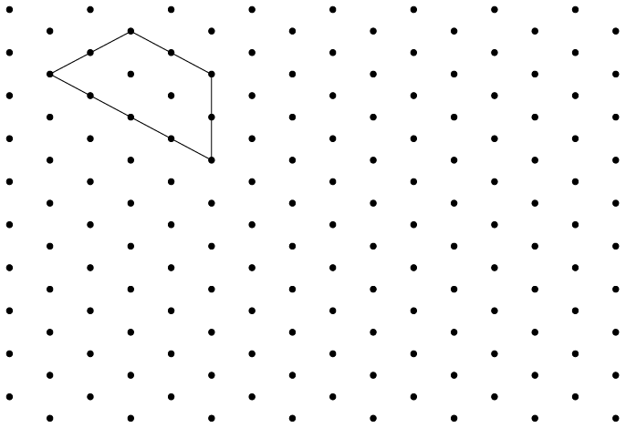
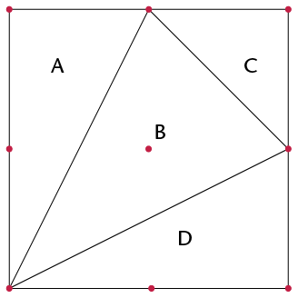

<div class="container">
  <div id="contents" class="col-md-12 main-content"><h1 xmlns="http://www.w3.org/1999/xhtml" id="toc-id-33">Term revision and assessment</h1>
	    <h2 xmlns="http://www.w3.org/1999/xhtml" id="toc-id-34">Revision</h2>
			<p xmlns="http://www.w3.org/1999/xhtml" class="Body-no-indent">You should not use a
calculator for any of the questions in this section. Do show your steps of
working.</p>
			<h3 xmlns="http://www.w3.org/1999/xhtml" class="Head-investigation">Working with whole numbers</h3>
			<ol xmlns="http://www.w3.org/1999/xhtml"><li><p class="Body-investigation-hanging">
Make the number sentences below true. Into the first block in each question,
write a multiplication or division sign. Into the second block, write either 10,
100 or 1 000.</p><ol><li>
			<p class="ques-a-">	8 ☐  ☐ = 800</p>
			
			</li>
			<li>
			<p class="ques-a-">		740 000 ☐
☐= 740</p></li></ol></li>
<li>
				
			<p class="Body-investigation">	Circle all the numbers
given below that will round off to 60 000.</p><p class="ques-a-">	 62 495;   54 498 ;  65 000;  
56 002 ;  67 024</p></li>
			<li>
			<p class="Body-investigation">	Calculate the
following:</p><ol><li>
			<p class="ques-a-">	\(274 561 + 367
238\)</p><hr/></li><li>	<p class="ques-a-">		\(4 672 - 3
937\)</p><hr/></li><li>
			<p class="ques-a-">	\(3 458 \times 43\)
</p><hr/></li><li><p class="ques-a-">	\(6 624
\div 18\)</p><hr/></li></ol></li><li>
			
			<p class="Body-investigation">	Write the missing
numbers in the blocks. </p><ol><li>
			<p class="ques-a-">	8; 15; 22; 29; ☐</p></li>
		
			<li>			<div><span></span></div>
			</li>

			</ol></li>
			<li>
			<p class="Body-investigation">	Tumi makes a sequence of
numbers using the following rule:		"Take half the
previous number and then add 12."	Write the next three
numbers in the sequence:</p>
			<p class="Body-investigation">	56; 40; 32; </p>
			<hr/></li><li>
<p class="Body-investigation-hanging">	Two three-digit numbers are added
together as shown, and produce a three-digit answer - but some of the digits are
missing. Fill in the missing digits so as to make the calculation correct. </p>
			<p class="Body-investigation">	59 ☐+ 3
☐9=☐53</p></li>
			<li>
			<p class="Body-investigation">	Ismail has the following
numbers: </p>
			<p class="Body-investigation">		71; 72; 73; 74;
75; 76; 77; 78; 79; 80</p>
			<p class="Body-investigation">	He wishes to sort them
by placing them in the sorting diagram below. Help Ismail 	by placing the
numbers in the correct blocks.</p>
			<table id="table-113" class="No-Table-Style"><tbody><tr class="Row-Column-467"><td class="cell-style-override-1">
							</td>
						<td class="cell-style-override-1">
							<p class="Table-header-centred">Prime number</p>
						</td>
						<td class="cell-style-override-1">
							<p class="Table-header-centred">Not a prime number</p>
						</td>
					</tr><tr class="Row-Column-467"><td class="cell-style-override-1">
							<p class="Table-header-centred">Multiple of 4</p>
						</td>
						<td class="cell-style-override-1">
							</td>
						<td class="cell-style-override-1">
							<p class="ANSWERS-table-text-centred"/>
						</td>
					</tr><tr class="Row-Column-467"><td class="cell-style-override-1">
							<p class="Table-header-centred">Not a multiple of 4</p>
						</td>
						<td class="cell-style-override-1">
							<p class="ANSWERS-table-text-centred"/>
						</td>
						<td class="cell-style-override-1">
							<p class="ANSWERS-table-text-centred"/>
						</td>
					</tr></tbody></table>
				      </li>
					<li>
			<p class="Body-investigation-hanging">	Write down,
using <i>only</i> numbers from the cloud:</p><ol><li>
			<p class="ques-a-">	All the prime numbers
</p><hr/></li><li>	<p class="ques-a-">	All the square
numbers</p><hr/></li><li>
			<p class="ques-a-">	All the cube numbers
</p><hr/></li><li>	<p class="ques-a-">		All the
multiples of 8</p><hr/></li>
<li>
			<p class="ques-a-">	All the factors of
8</p><hr/></li></ol></li>
<li>
			<p class="Body-investigation">	Teacher
Ramushwana states: </p>
			<p class="Body-investigation">	"Every <b>even
number</b> (greater than or equal to 6) can be written as the sum of a</p>
			<p class="Body-investigation">	<b>pair of odd prime
numbers</b>, for example \(10 = 3 + 7\)."</p><ol><li>
			<p class="ques-a-">		Write down <i>two</i>
pairs of odd prime numbers that each sum to 20.</p>
			<hr/></li><li>
<p class="ques-a-">		Choose any even number greater than 30 and write
it as a sum of two odd 	prime numbers.</p>
			<hr/></li></ol></li><li><ol><li>
<p class="ques-a-">	Write the following as a product of prime
factors:</p><ol><li>
			<p class="ques-a-">	576 </p>
			<hr/></li><li>
<p class="ques-a-">		600</p>
			<hr/></li></ol></li>
			<li>
<p class="ques-a-">		Find both the (i) HCF and (ii) LCM of 576 and
600.</p><ol><li>
			<p class="ques-a-">		HCF </p>
			<hr/></li><li>
<p class="ques-a-">		LCM (leave your answer as a product of
prime factors)</p>
			<hr/></li></ol>
			</li>
</ol></li><li>
<p class="Body-investigation-hanging">	How many hours will it take the
Adams family to reach their holiday destination if it is 495 km away and they
travel at an average speed of 110 km/h?</p>
			<hr/></li>
<li>
			<p class="Body-investigation-hanging">	Graeme,
Thuli and Andile have worked as a team over the holidays, mowing the lawns of
their neighbours. They collected a total of R1 200 and now need to share it.
They agree that as they didn't all work an equal amount, the money should be
shared between Graeme, Thuli and Andile in the ratio 4 : 6 : 5. How much money
will Thuli receive?</p>
			<hr/></li>
<li>
<p class="Body-investigation-hanging">	Mr Khumalo decides to try to
make some money buying and selling used furniture. He has R6 000 in his bank
account, and uses some of the money to buy an old bed base and mattress for
R800, a dresser for R2 500, two lockers for R300 each, and a washing machine for
R900.</p><ol><li>
			<p class="ques-a-">	How much is left in his
bank account after these purchases?</p>
			<hr/></li>
<li>
<p class="ques-a-">		Suppose that he sells the bed base and mattress
for R980, the dresser for R2 950,	and both lockers for a total of R750.
Nobody seems to want his washing machine	though. At this stage he has
made a loss. What is the value of the loss? </p>
			<hr/></li>
<li>
<p class="ques-a-">	How much does he need to sell the washing
machine for to have an overall 	profit of R1 000?</p>
			<hr/></li>
</ol></li>
<li>
<p class="Body-investigation-hanging">	Mrs Steyn takes out a loan of
R55 000 from Fidelity Bank. The bank charges simple <span>interest of R500 per
month. How much money will Mrs Steyn owe after \(1\frac{1}{2}\)
years?</span></p>
	<hr/></li>
<li>
<p class="Body-investigation-hanging">	John earns R480 on a Saturday.
He works from 08:00 to 14:00. Calculate his hourly rate.</p>
			<hr/></li></ol>
			<h3 xmlns="http://www.w3.org/1999/xhtml" class="Head-investigation">Exponents</h3>
			<ol xmlns="http://www.w3.org/1999/xhtml"><li><p class="Body-investigation">
Calculate.</p><ol><li>
			<p class="ques-a--2-space-below">		\(12
\times 12\)			</p>
			<hr/></li><li>
<p class="ques-a--2-space-below">				\(	8 \times
8	\)		</p>
			<hr/></li><li>
<p class="ques-a--2-space-below">	\(	7 \times 7 \times 7\)	
</p>
			<hr/></li><li>
<p class="ques-a--2-space-below">				\(	3 \times
3 \times 3	\)	</p>
			<hr/></li><li>
<p class="ques-a--2-space-below">	\(	6 \times 6 \times 6	
\)</p>
			<hr/></li><li>
<p class="ques-a--2-space-below">				\(	13
\times 13		\)	</p>
			<hr/></li></ol></li><li>
<p class="Body-investigation">	Explain the difference between \(4 \times 3\)
and \(4^3\).</p>
			<hr/></li><li>
<p class="Body-investigation">	Write \(
5^5\) in expanded form.  	</p>
			<hr/></li><li>
<p class="Body-investigation">	Write the following in exponential
form:</p><ol><li>
			<p class="ques-a--2-space-below">	\(	2 \times
2 \times 2		\)</p>
			<hr/></li><li>
<p class="ques-a--2-space-below">				\(	3 \times
3 \times 3 \times 3 \times 3 \times 3 \times 3 \times 3	\)	</p>
			<hr/></li></ol></li><li>
<p class="Body-investigation">	Write the numbers in exponential form. Check
your answers.</p><ol><li>
			<p class="ques-a--2-space-below">		81	
	</p>
			<hr/></li><li>
<p class="ques-a--2-space-below">		10 000		</p>
			<hr/></li></ol></li><li>
<p class="Body-investigation">	Complete:</p><ol><li>		5 squared is

			<hr/></li><li>
<p class="ques-a-">			5 cubed is		</p>
			<hr/></li></ol></li><li>
<p class="Body-investigation">	Calculate:</p><ol><li>
			<p class="ques-a-">\(
7^2\)		</p><hr/></li><li>	<p class="ques-a-">		
			\(	15^2\)</p><hr/></li><li>
			
			<p class="ques-a-">
\(3^2 \times 4^2 \)</p><hr/></li><li><p class="ques-a-">\(\sqrt{16}\)</p>
</li>
</ol></li>
<li>
			<p class="Body-investigation">	Are the following
statements true or false? Explain your answers.</p><ol><li>
			<p class="ques-a-">		The number 64 can be
written both as a square and a cube.</p>
			<hr/></li><li>
<p class="ques-a-">	\(	2^5\) 
is smaller than \(30^1\). </p>
			<hr/></li>
			</ol>
		      </li>
		      <li>
			<p class="Body-investigation">	Calculate the following and give reasons
			  for your answers.</p>
			  <ol>
			    <li>
			      <p class="ques-a-">
				\(\sqrt[3]{216}\)</p>
				<hr/>
			      </li>
			      <li>
				<p class="ques-a-">\(\sqrt[3]{8}\)</p>
				<hr/>
			      </li>
			      <li>\(\sqrt[3]{125}\)<hr/>
			    </li>
			    <li>
			      <p class="ques-a-">\(\sqrt[3]{27}\)</p>
                              <hr/>
                            </li>
                          </ol>
                        </li>
<li>
			<p class="Body-investigation">	Determine the
value of each of the following:</p><ol><li>
			<p class="ques-a-">	\(
3^2-2^3\)</p><hr/></li><li><p class="ques-a-">\(4(10 -
1^{100})\)</p><hr/></li><li><p class="ques-a-">\((8-2)^2\)</p><hr/></li><li><p class="ques-a-">\(\sqrt{4} \times
\sqrt{81}\)</p><hr/></li><li>\((\sqrt{58})^2\)<hr/></li><li><p class="ques-a-">\(\sqrt[3]{27} \div \sqrt{9}\)</p><hr/></li><li><p class="ques-a-">\(10 \times \sqrt{81}\)</p><hr/></li><li>\(\sqrt{2
\times 32}\)<hr/></li></ol></li><li>
			<p class="Body-investigation">	\(13=169; 14^2
=196; 15^2=225; 16^2=256; 7^3=343; 8^3=512;
3^3=27\)
			</p><p class="Body-investigation para-style-override-5">
Use these facts to calculate the value of each of the following:</p>
<ol>
  <li>
    <p class="ques-a-">\(\sqrt{196}-\sqrt[3]{512}\)</p>
    <hr/>
  </li>
  <li>
    <p class="ques-a-">\(\sqrt{169 \times 225}\)
    </p>
    <hr/>
  </li>
  <li>\(\frac{\sqrt{196}}{\sqrt[3]{343}}\)<hr/>
</li>
    <li><p class="ques-a-">\(\frac{14^2- 13^2}{3^3}\)</p><hr/></li>
    </ol></li>
<li>
			<p class="Body-investigation">	If
\(56^3= 175 616\), write down the value of \(\sqrt[3]{175 616}\).</p><hr/></li>
</ol>
<h3 xmlns="http://www.w3.org/1999/xhtml" class="Head-investigation">Geometry of straight lines</h3><ol xmlns="http://www.w3.org/1999/xhtml"><li>
			<p class="Body-investigation">	Consider the grid shown
alongside.</p><ol><li>
			<p class="ques-a-">	Is PS a line, ray or
line segment? </p><div class="frame-2">
				</div>
			<hr/></li>
			<li>
<p class="ques-a-">		Draw on the grid a line segment through R 
that will be perpendicular to PS. Label it TU.</p></li><li>
			<p class="ques-a-">		Draw on the grid a line
that is parallel 	to PS. Label it WX.</p></li></ol></li><li>
			<p class="Body-investigation-hanging">	Provide the
correct name for each of the geometric features AB and CD, shown on the
diagram:</p>
			<div class="frame-2">
				</div>
			<p class="ques-a-">AB:</p><hr/><p/><p class="ques-a-">CD:
</p><hr/></li><li>
<p class="Body-investigation-hanging">	There is a geometric relationship
between line segments PR and QS shown in the diagram. Describe the relationship
by adding the correct word on the dotted line:</p>
			<div class="frame-2">
				</div>
			<p class="Body-no-indent">PR is ____________ QS.</p></li><li>
			<p class="Body-investigation">	Draw a ray and a line
that will never meet.</p></li></ol><p xmlns="http://www.w3.org/1999/xhtml" class="Body-no-indent&#10;para-style-override-1"><span></span></p>
			<h3 xmlns="http://www.w3.org/1999/xhtml" class="Head-investigation">Construction of geometric figures</h3>
			<ol xmlns="http://www.w3.org/1999/xhtml"><li><p class="Body-investigation-hanging">
Use a protractor to accurately measure the following angles, as shown on the
diagram below, and write the answers in the table provided:</p><ol><li>
			<p class="ques-a-">	\(\hat{B}\)
</p></li>
<li><p class="ques-a-">\(A\hat{D}B\)</p><hr/></li>
<li><p class="ques-a-">\(D\hat{A}B\)</p><hr/></li>
<li><p class="ques-a-">\(C\hat{D}B\)</p><hr/></li>
<li><p class="ques-a-">reflex \(C\hat{A}B\)</p><hr/></li>

</ol><p class="Body-no-indent"><span></span> </p>
			<table id="table-114" class="No-Table-Style"><tbody><tr class="Row-Column-200"><td class="cell-style-override-1">
							<p class="Table-header-centred">Angle name</p>
						</td>
						<td class="cell-style-override-1">
							<p class="Table-header-centred">Size</p>
						</td>
						<td class="cell-style-override-1">
							<p class="Table-header-centred">Classification</p>
						</td>
					</tr><tr class="Row-Column-200"><td class="cell-style-override-1">
							<p class="ques-a-&#10;para-style-override-2">\(\hat{B}\)</p></td>
						<td class="cell-style-override-1">
							<p class="ANSWERS-table-text-centred"/>
						</td>
						<td class="cell-style-override-1">
							<p class="ANSWERS-table-text-centred"/>
						</td>
					</tr><tr class="Row-Column-200"><td class="cell-style-override-1">
							<p class="Table-text-centred">\(A\hat{D}B\)</p></td>
						<td class="cell-style-override-1">
							<p class="ANSWERS-table-text-centred"/>
						</td>
						<td class="cell-style-override-1">
							<p class="ANSWERS-table-text-centred"/>
						</td>
					</tr><tr class="Row-Column-200"><td class="cell-style-override-1">
							<p class="Table-text-centred">\(D\hat{A}B\)</p></td>
						<td class="cell-style-override-1">
							<p class="ANSWERS-table-text-centred"/>
						</td>
						<td class="cell-style-override-1">
							<p class="ANSWERS-table-text-centred"/>
						</td>
					</tr><tr class="Row-Column-200"><td class="cell-style-override-1">
							<p class="Table-text-centred">\(C\hat{D}B\)</p></td>
						<td class="cell-style-override-1">
							<p class="ANSWERS-table-text-centred"/>
						</td>
						<td class="cell-style-override-1">
							<p class="ANSWERS-table-text-centred"/>
						</td>
					</tr><tr class="Row-Column-200"><td class="cell-style-override-1">
							<p class="Table-text-centred">Reflex
\(C\hat{A}B\)</p></td>
						<td class="cell-style-override-1">
							<p class="ANSWERS-table-text-centred"/>
						</td>
						<td class="cell-style-override-1">
							<p class="Table-text-centred">Reflex</p>
						</td>
					</tr></tbody></table>
				      </li>
					<li><p class="Body-investigation">	Construct a semi-circle with a radius of 3
cm.</p>			<p class="Body-no-indent&#10;para-style-override-1"><span></span></p></li>

		<li>	<p class="Body-investigation-hanging">	Use a
ruler and protractor to construct angles that are the given sizes. Label the
angles correctly.</p><ol><li>
			<p class="ques-a-">	\(E\hat{F}G =
152^{\circ}\)</p></li><li><p class="ques-a-">	\(X\hat{Y}Z = 289^{\circ}\)
</p></li>

</ol><div>
				<div class="frame-2">
					</div>
				</div></li>
				<li>
			<p class="Body-investigation-hanging">	Use circles to
construct two lines, CD and EF, that are parallel to line AB below. Line CD
should be above line AB, and line EF below line AB. Label both lines.</p>
			<p class="Body-no-indent"><span></span> </p></li>
			<li><p class="Body-investigation-hanging">	Consider
the diagram alongside.Write down the names of the pair of perpendicular
lines.</p>
			<div class="frame-2">
				</div>
			<hr/></li></ol>
			<h3 xmlns="http://www.w3.org/1999/xhtml" class="Head-investigation">Geometry of shapes</h3>
			<ol xmlns="http://www.w3.org/1999/xhtml"><li><p class="Body-investigation">	Give the
full name of the shape that fits the given descriptions:</p><ol><li>
			<p class="ques-a-">		A three-sided shape that
has exactly two sides equal in length</p>
			<hr/></li><li>
<p class="ques-a-">		A four-sided shape with both pairs of opposite
sides parallel and equal in 	length, and with no right angles</p>
			<hr/></li><li>
<p class="ques-a-">	A four-sided shape with only one pair of
opposite sides parallel</p>
			<hr/></li></ol></li><li>
<p class="Body-investigation-hanging">	What is the correct term for each of the
following parts of the circle with centre B, as shown alongside?</p>
			<div class="frame-2">
				</div>
			<ol><li><p class="ques-a-">		Line AB</p>
			<hr/></li><li>
<p class="ques-a-">	The shaded area</p>
			<hr/></li></ol></li><li>
<p class="Body-investigation-hanging para-style-override-7">On the square
grid alongside, two sides of a kite have been drawn. Use a ruler and complete
the kite on the grid.</p>
			<div class="frame-2">
				</div>
		</li><li>	<p class="Body-investigation-hanging"><a id="Anchor-16"/>	Darrel says, "The four-sided shapes I am thinking of
have at least one pair of adjacent sides equal. What are they?" Write down the
names of all the shapes that fit his description.</p>
			<hr/></li>
<li>
<p class="Body-investigation-hanging">	DEFG is a kite, and DE = 4 cm and EF =
5,2 cm. Write down the lengths of DG and GF.</p>
			<hr/></li>
<li>
<p class="Body-investigation-hanging">	STUV is a rectangle. Write down the
value of \(\hat{T} +
\hat{V}\).	Give a
reason for your answer.</p>
			<hr/></li>
<li>
<p class="Body-investigation">	Consider the diagram alongside.</p>
			<div class="frame-2">
				</div>
			<ol><li><p class="ques-a-">	Write down the
letters of all the 	shape(s) that are <i>congruent</i> to shape B.</p>
			<hr/></li><li>
<p class="ques-a-">		Write down the letters of all the 	shape(s)
that are <i>similar</i> to shape B.</p>
			<hr/></li></ol></li><li>
<p class="Body-investigation-hanging">	An isosceles triangle, LMN, has LM = 4
cm and a perimeter of 16 cm. Investigate and write down <i>all</i> the possible
lengths of MN and LN.</p>
			<hr/></li>
<li>
<p class="Body-investigation-hanging">	In each case say whether the two sides
are opposite sides or adjacent sides of quadrilateral DEFG.</p>
			<div class="frame-2">
				</div>
			<ol><li><p class="ques-a-">		GD and DE</p>
			<hr/></li><li>
<p class="ques-a-">	DE and GF</p>
			<hr/></li></ol></li></ol>
	<h2 xmlns="http://www.w3.org/1999/xhtml" id="toc-id-35">Assessment</h2>
	<p xmlns="http://www.w3.org/1999/xhtml" class="Body-no-indent">In this section, the numbers indicated in brackets at the end of a question indicate the number of marks that this question is worth. Use this information to help you determine how much working is needed. </p>
	<p xmlns="http://www.w3.org/1999/xhtml" class="Body">The total number of marks allocated to
	 the assessment is 60.</p>
	 <div xmlns="http://www.w3.org/1999/xhtml" class="aside">
	<p class="Body-box-no-indent">
	<b>Note:</b>
	</p>
	<p class="Body-box-no-indent">Do not use your calculator!</p>
	</div>

			<ol xmlns="http://www.w3.org/1999/xhtml">
			  <li><p class="Body-investigation">	Here are five one-digit cards: </p>
			<p class="Body-no-indent"><span></span> </p>
			<p class="ques-a-">	Two-digit numbers can be made by
placing two cards next to each other - so, for example, taking the 1 and the 2
and putting them next to each other will create the number 12 (twelve).</p>
			<p class="ques-a--with-marks">	Choose two cards each
time to make the following two-digit numbers:				</p>
			<ol><li><p class="ques-a-">		An odd number</p>
			<hr/></li><li>
<p class="ques-a-">		A multiple of 9</p>
			<hr/></li><li>
<p class="ques-a-">		A factor of 126</p>
			<hr/></li><li>
<p class="ques-a-">		A square number</p>
			<hr/></li></ol></li>
			<li>
<p class="Body-investigation-hanging">	Ayanda has a pack of cards numbered from
1 to 16. He chooses four cards at random from the pack:</p>
			<ul><li class="Body-bullet-indented">One is a factor of
39.</li>
				<li class="Body-bullet-indented">Two are
multiples of 4.</li>
				<li class="Body-bullet-indented">Three are
even.</li>
				<li class="Body-bullet-indented">The total of
the four numbers is more than 45, but less than 50.</li>
			</ul><p class="ques-a--with-marks">	Write down the
values of the four numbers.							
			</p>
			<hr/></li>
			<li>
<p class="Body-investigation-hanging">	All 769 learners from the Sibanye
Primary School are going to an athletics meeting. The school hires buses from a
local company. Each bus can take only 52 passengers, and each bus has to have
two teachers on board. 	How many buses will the school have to hire to get
everyone to the meeting?	     </p>
			<hr/></li>
<li>
<p class="Body-investigation-hanging">	Calculate the total number of test
wickets taken by the top four wicket takers in the Proteas' cricket history
(figures correct as at June 2013):</p>
			<ul><li class="Body-bullet-indented">Shaun Pollock:
421</li>
				<li class="Body-bullet-indented">Makhaya Ntini:
390</li>
				<li class="Body-bullet-indented">Dale Steyn:
332</li>
				<li class="Body-bullet-indented">Allan Donald:
330	</li>
			</ul><hr/></li>

<li>
<p class="Body-investigation">	Use prime factors to find the LCM of 42 and 18.	
	</p>
			<hr/></li>
<li>
<p class="Body-investigation-hanging">	Dintle's family needs to get to
Polokwane, 330 km away, by 11 a.m. If they leave at 7.40 a.m. and drive at an
average speed of 100 km/h, will they reach their destination on time? Show all
your working.			</p>
			<hr/></li>
<li>
<p class="Body-investigation">	Determine the value of each of the following:	
</p><ol><li>
			<p class="ques-a--with-marks">	\(	6^3 - (7^2 + 6^2)\)</p> <hr/>
			</li>
			<li>
			  <p class="ques-a--with-marks">\((8-5)^3\)</p> <hr/>
			</li>
			<li>
			  <p class="ques-a--with-marks">\((\sqrt[3]{125})^2\)</p>
			  <hr/>
			</li>
			<li>
			  <p class="ques-a--with-marks">\(12^2 - 4\sqrt{121} \div
			  2^2\)</p>
			    <hr/>
			  </li>
			  <li>
			    <p class="ques-a--with-marks">\(3\sqrt{64}\)</p>
			    <hr/>
			  </li>
			</ol>
		      </li>
		      <li>
			<ol>
			  <li>
			    <p class="ques-a--with-marks">	Write down the letters of all the acute angles in the diagram.                 		 	</p> <hr/>			    <p class="Body-no-indent"> <span>  </span> </p>
			    </li>

			      <li>
				<p class="ques-a--with-marks para-style-override-8">
				  Measure the size of angle \(d\) in the diagram and write it down.
				  
				  </p>
				  <hr/>
				</li>
				<li>
			<p class="ques-a--with-marks">		Classify angle
\(d\) according to its size. 
			</p><hr/></li>
			</ol></li>
			<li>
			<p class="Body-investigation-with-marks">	Draw and
correctly label angle \(K\hat{L}M = 168^{\circ}\).			    </p>
			<div class="frame-2">
				</div>
			</li>
			<li><p class="Body-investigation-hanging">	Use your
ruler and protractor to draw a line that is parallel to line segment FG drawn
below, and goes through point H.			</p>			<p class="Body-no-indent"><span></span> </p></li>

			<li><p class="Body-investigation-hanging">	Four
circles are drawn so that they fit neatly into a square with side length of 6
cm, as shown (<i>not</i> to scale). Write down the radius of each
circle.</p>			<div class="frame-2">
				</div>
				<hr/></li>

				<li>
				  <ol>
				    <li>
				      <p class="ques-a--with-marks">	What is the geometrical name of the shape shown on the dot grid below?		</p> <hr/>
                                    </li>
                                    <li> <p class="ques-a-">	Draw two shapes that are <i>similar</i> to the shape shown, anywhere on the 	grid. Each shape that you draw should have a different size.					</p></li>
			</ol><p class="ques-a-">		</p></li>
			
			<li>
			<p class="Body-investigation-hanging">	The
following diagram shows a square drawn on a dot grid. The square is divided into
four triangles, namely A, B, C, and D.</p><div class="frame-2">
				</div><ol>
			<li>
			<p class="ques-a--with-marks">	Write down the
letters of all the 	right-angled triangles.				
</p><hr/></li><li>
<p class="ques-a--with-marks">	Write down the letters of all the 
isosceles triangles.		</p><hr/></li>
<li>
<p class="ques-a--with-marks">		Write down the letters of the two 
congruent triangles.		</p><hr/></li>
</ol></li>
<li>
<p class="Body-investigation-hanging">	I am a quadrilateral with two
pairs of opposite sides equal, no adjacent sides equal, and no right angles.
What shape am I?			</p><hr/></li>
<li>
<p class="Body-investigation-with-marks">	What is the special name we give
to the perimeter of a circle?		</p><hr/></li>
<li>
<p class="Body-investigation-hanging">	Draw a rhombus of any size on
the dot grid below. Add appropriate symbols on the diagram to show that the
opposite sides of a rhombus are parallel.	   </p>
			
			<p class="Body-no-indent"><span></span> </p>
			</li>
			<li><p class="Body-investigation-hanging">
In trapezium JKLM, JK is parallel to the opposite side. </p>
			<p class="Body-investigation-spaced">	Complete the
statement: </p>
			<p class="Body-investigation">	JK || </p>
			<hr/></li>
			<li> <p class="Body-investigation">	Study the following diagram:</p>
			<p class="Body-no-indent"><span></span> </p>
			<p class="Body-investigation-spaced">	Cross out the
<i>incorrect</i> word or symbol in each set of brackets:</p>
			<p class="Body-investigation-spaced">	AD is
(parallel/perpendicular) to BC. This can be shown in symbols as follows: 
</p>
			<p class="Body-investigation-spaced">	(AD
\(\perp\) BC 
/ AB || BC).				</p>
      </li></ol>
      
	
  </div>
</div>